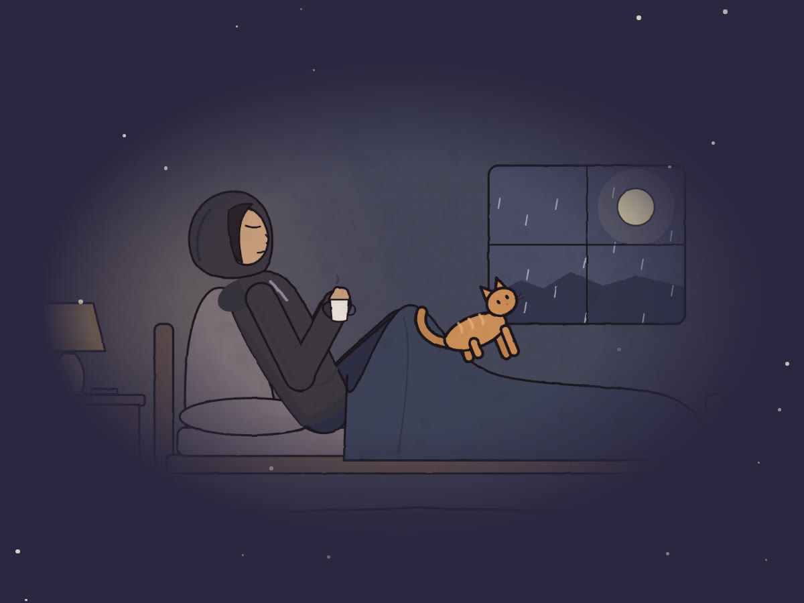
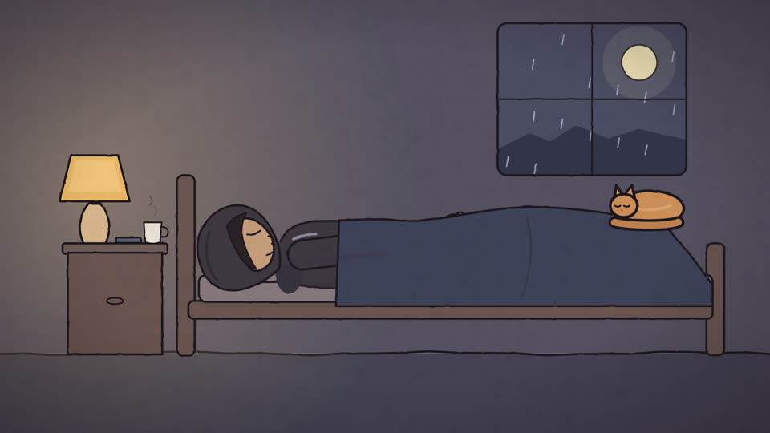
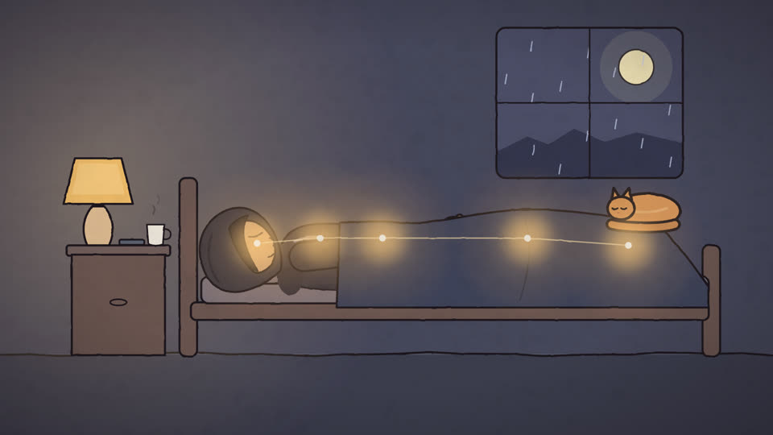
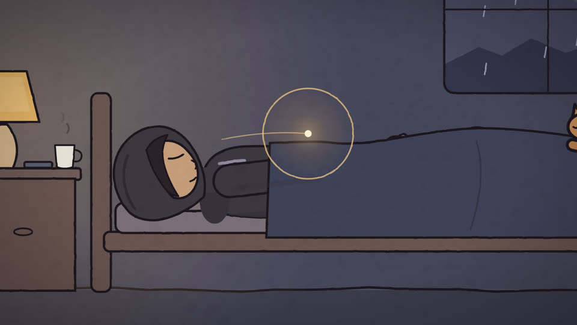
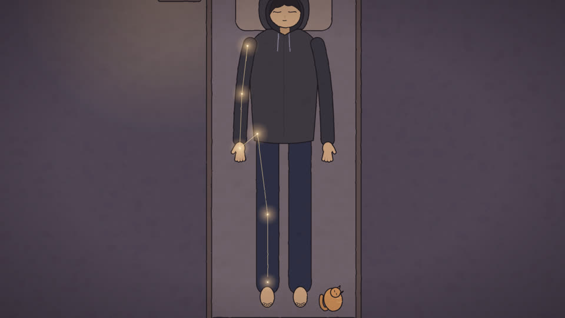
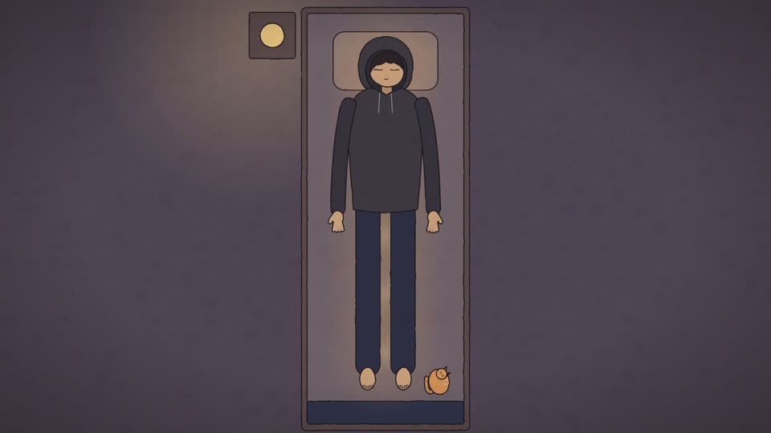
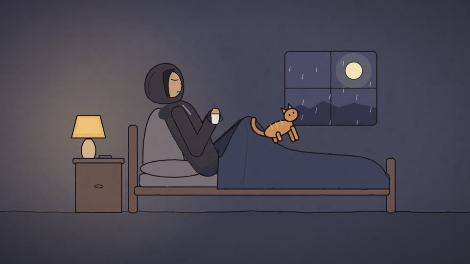

byleo.org

hi, I'm Leo.
mental performance coach
Since 2017 I've been helping people improve their lives with proven mental techniques for calm, focus and rest — explained simply, and often through animation, which makes them unusually easy to grasp.
your free 12-minute audio
It's a Yoga Nidra — also called yogic sleep, or NSDR (non-sleep deep rest).
Rooted in an ancient tradition, it's now backed by a growing body of university research and increasingly recommended by neuroscientists for rest, stress relief and focus. I've practised it myself since 2013 — it's one of the most effective tools I know.
rest deeply in just 12 minutes.
it's ready.
Your Yoga Nidra is waiting for you. I've also emailed you the link, so you can come back to it any time.
listen nowOpens instantly. Now and then I may also send you short, practical tips for calm, focus and better rest — unsubscribe anytime. Privacy policy
what happens in 12 minutes
Sit or lie down, and just listen. My voice guides you through six gentle stages:

settle in
0:55Your body softens and settles.

feel your whole body
1:50Attention moves from thoughts to the body.

follow the breath
2:35Your breath slows down on its own.

a journey around the body
3:45Attention moves point by point. The mind goes quiet.

deep rest
9:45The heart of it: awake, yet deeply resting.

come back refreshed
10:45You get up refreshed, as if rebooted.
why it's worth 12 minutes
- A powerful nap in 12 minutes — not groggy afterwards, but recharged, as if plugged into a battery.
- Calm a racing mind — when stress or overthinking won't switch off.
- Any time you need it — sitting or lying down, whenever your energy or focus dips during the day.
- Wind down for sleep — in bed, to let the day go.
Leo Soloviev
I help people improve their lives through proven mental techniques for calm, focus and rest — explained simply, and often through animation, which makes them unusually easy to grasp.
My background brings together two worlds that rarely meet. I started out as a lawyer, with a Master's in International Business Law from the University of London and a Master's in Corporate Law from NYU School of Law.
In 2013 I turned to the mind itself. I trained with teachers in the UK and the US, and spent months at a time in India learning mind techniques — including meditation and Yoga Nidra — from some of the best traditional teachers there.
Many 7–10-day silent retreats, and a month-long solitude retreat alone in the Himalayas, let me study how the mind works from the inside. I've been coaching since 2017.
12 minutes. Eyes closed. Nothing to do.
send me the free audio